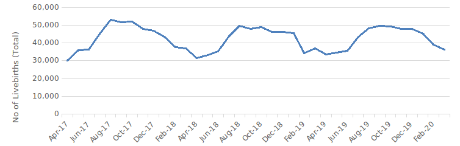

Human births follow a seasonal pattern where there are specific periods during which many births occur. Birth seasonality is largely considered to be a product of the rate of conceptions that occurred 9 months earlier. The presence of rhythms in the distribution of births throughout the year—or birth seasonality is a multifactor phenomenon [1]. Birth patterns may vary according to geography and can be characterized by temporal factors. Recent research has observed distinct seasonal childbirth patterns in different states of India, mostly as a result of agro-climatic factors [2]. The examination of region-specific birth patterns is also important because of its policy implications. Given the demands on the public health system, the application of seasonal patterns in births or, by appropriate lagging, conception in health system planning can potentially improve the delivery of critical maternal and child health services [2-3].
In this policy brief, patterns of birth seasonality are examined between the period of FY 18-FY20 in the state of Haryana using Health Management Information System (HMIS) data. It then showcases the key policy implications of birth seasonality.
Strong Birth Seasonality in Haryana?
Conception, followed by childbirth in Haryana appears to be strongly influenced by the monsoon season and cultivation. Every year, births peak during the months of August-October which decline thereafter but dip sharply between February-March (Figure 1).

Source: HMIS
Haryana is primarily an agricultural state, with 70% of its population engaged in agriculture [4]. Strong seasonality in births in Haryana reflects the influence of the “northern agrarian pattern”. The peak in births during August-October corresponds to conception between the winter months of November-January which is also a period of food abundance since it follows the harvesting of important kharif food crops. Similarly, the dip in February–March corresponds to conception during May–June and falls in the farming cycle where rabi crops are harvested. It is also a period with less abundance of food and money at the time of sowing the Kharif crops [2]. A stable birth pattern can be helpful to local administrators who can use this information to plan the delivery of essential health services in the state.
Information on birth seasonality has at least 5 key policy implications:
- Obstetric Care: A Key Priority for Action: Improving obstetric care is essential to tackle maternal morbidity and mortality. The notable seasonal variations in births would influence the demand for health services and relax constraints on facilities during the leaner spring months. NFHS 5 data shows that institutional deliveries account for 95% of all births and nearly 58% were births in public facilities [5]. Given that a third of the births happen between August to October, local administration can plan effectively to ensure the availability of transportation to public health facilities and quality in-facility services. Ante-natal and post-natal services would be likewise affected. Appropriate staffing allocations would have to be made to meet seasonal demands.
- Improving the Delivery of Child Health Services: Birth immunization plays an important role in child survival. According to HMIS data, the coverage of birth doses of important vaccines like Vitamin K1 is not optimal. The gaps in the delivery of such vaccines are due to insufficient supply and poor awareness of health workers [6]. It is essential that state and district-level health administrations not only effectively plan to ensure there is adequate stock of birth vaccines (BCG, Vitamin K, Hepatitis B, and OPV) during the birth peak months. Additionally, district training centers under the Department of Health can periodically conduct refresher training.
- Improving Reproductive Health Services: Ensuring that women of reproductive age satisfy their family planning needs with modern methods is essential to ensure the new global target of universal access to sexual and reproductive healthcare services [7]. NFHS-5 shows that 7.6% of married women aged 15-49 years in Haryana were unable to meet their needs for family planning in 2019-21 [5]. Frontline health workers are required to disseminate messages on family planning in a timely manner [8] but only 25% of female non-users in the state have been ever spoken to about family planning by health workers [5].
To reduce this gap, information on seasonality in conceptions must be utilized to inform the implementation of family planning services. Counseling and distribution of conventional contraceptives are important activities of village health and nutrition days [9] and can be further prioritized during the months of November, December, and January. Households with newly married couples, women who have recently delivered, and families that usually migrate for farm labor can be targeted for household counseling visits during this period. Monthly plans of Sub-centers and Primary Health Centers must accommodate an adequate supply of contraceptives for distribution specifically during these months. At the state level, the promotion of family planning campaigns can be intensified by the Health & Family Welfare department during the peak conception period.
- Prioritization of initiatives for social change:
Despite progress in the past decade, Haryana currently has one of the lowest sex ratios in the country, highlighting that the practice of gender-biased sex-selective abortion is still rampant [10]. The timing of birth can inform monitoring efforts as well as aid the implementation of social awareness programs in gender-critical districts of the state. The district health department must take steps to monitor the sex ratio at birth, ensure 100% registration of pregnancies and births, and complete minimum antenatal care checkups in accordance with the Beti Bachao Beti Padhao Scheme [11]. - Future goals to strengthen evidence-based policy implementation: Given the importance of birth-related information in improving service delivery, it is critical that such evidence is periodically compiled and used by local health administration even at sub-district level in addition to state and district levels. Further granular-level analysis of birth data and cross-comparison with program data can also help identify priorities or gaps.
References
- Cancho-Candela, R., Andrés-de Llano, J. M., & Ardura-Fernandez, J. (2007). Decline and loss of birth seasonality in Spain: analysis of 33 421 731 births over 60 years. Journal of Epidemiology & Community Health, 61(8), 713-718.
- Nambiar, A., Chowdhury, D., & Agnihotri, S. B. (2022). Seasonal Variations in Childbirth A Perspective from the HMIS Database (2017–20). Economic & Political Weekly, 7(17).
- Ogum, G. E. O., & Okorafor, A. E. (1979). Seasonality of births in south-eastern Nigeria. Journal of Biosocial Science, 11(2), 209-217.
- CIMMYT. (2023). Cropping Systems of Haryana – Challenges and Opportunities. Retrieved from https://repository.cimmyt.org/handle/10883/22640
- Indian Institute for Population Science.,& MoHFW. (2021). Haryana. National Family Health Survey (NFHS 5) 2019-21. Retrieved from http://rchiips.org/nfhs/NFHS-5_FCTS/Haryana.pdf
- Bora, K. (2021). Gaps in the coverage of vitamin K1 prophylaxis among newborns in India: insights from secondary analysis of data from the Health Management Information System. Public Health Nutrition, 24(17), 5589-5597.
- UN. (2015). Sustainable Development Goals. Goals 3. United Nations. Retrieved from https://sdgs.un.org/goals/goal3
- Ministry of Health and Family Welfare. (n.d.). Family Planning methods: Brochure for ASHA. Retrieved from https://nhm.gov.in/images/pdf/programmes/family-planing/guidelines/Asha-Brochure-English.pdf
- Ministry of Health and Family Welfare.(2019). National Guidelines for Village Health, Sanitation & Nutrition Day .Retrieved from https://nhm.gov.in/New_Updates_2018/NHM_Components/RMNCHA/CH/Guidelines/National_Guidelines_on_VHSND_English_High_Res_Print_ready.pdf
- Ministry of Women and Child Development. (2022). Sex Ratio at Birth. Press Information Bureau. Retrieved from https://pib.gov.in/PressReleasePage.aspx?PRID=1806605
- Ministry of Women and Child Development. (2019). Beti Bachao Beti Padhao Scheme Implementation Guidelines. Retrieved from https://wcd.nic.in/sites/default/files/Guideline_6.pdf
We acknowledge the support of the National Health Mission, CTARA-IIT Bombay, and the GISE Hub, IIT Bombay.
Authors
Marian Abraham & Prof. Sarthak Gaurav
Marian Abraham is a Senior Research Analyst at the Koita Centre For Digital Health, IIT Bombay.
Prof. Sarthak Gaurav is an Associate Professor at Shailesh J. Mehta School of Management, IIT Bombay.
Suggested citation: Abraham, M., & Gaurav., S. (2024). Birth seasonality in Haryana: from evidence to action. Nutrition Group, IIT Bombay